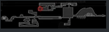
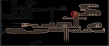
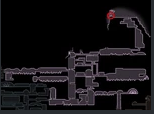
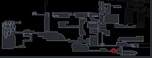
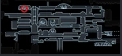
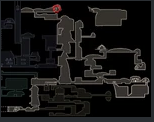

| No. | Condition | Location | Image |
|---|---|---|---|
| 1 | ancient basin | defeat 2 lesser mawleks guarding it |  |
| 2 | collected 300 essence | resting grounds; seer |  |
| 3 | mantis claw, monarch wings(optional), crystal heart | crystal peak; statue of the radiance |  |
| 4 | defeat nosk | deepnest; nosk lair |  |
| 5 | rescue 31 grubs | forgotten crossroads; grubfather |  |
| 6 | trial of conquerer(2nd trial) | colosseum of fools |  |